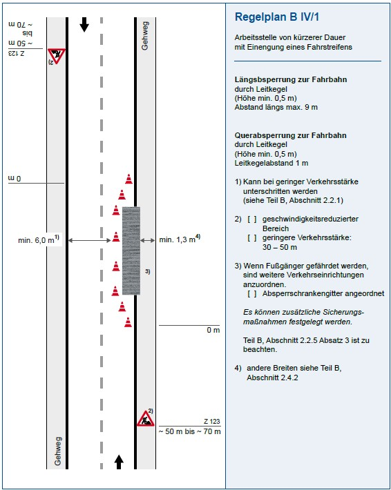
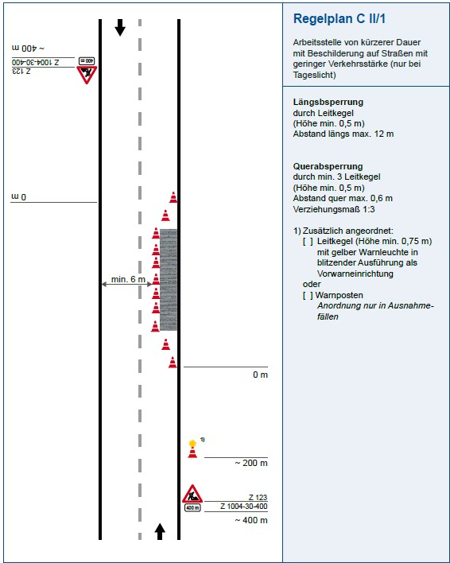
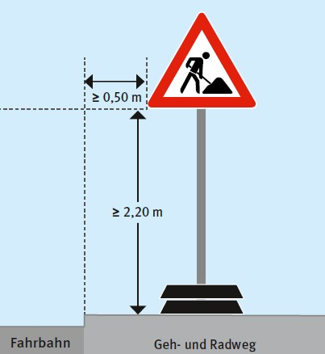
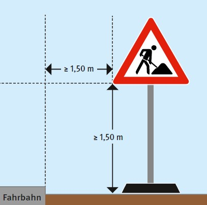

Häufig finden Vermessungsarbeiten im Straßenbereich statt. Damit ist der Bereich gemeint, in dem sich die Vermessungsarbeiten auf den Straßenverkehr auswirken. Dies muss nicht zwingend auf der Fahrbahn sein. Da Beschäftigte oftmals schlecht wahrgenommen werden, besteht die größte Gefährdung darin, angefahren oder überfahren zu werden.
Die Sicherung von Vermessungsarbeiten, die sich auf den Straßenverkehr auswirken, ist nach den Bestimmungen der Straßenverkehrs-Ordnung (StVO) vorzunehmen. Die Sicherung von Arbeitsstellen und der Einsatz von Absperrgeräten muss nach den "Richtlinien für die verkehrsrechtliche Sicherung von Arbeitsstellen an Straßen" (RSA) erfolgen, soweit landesrechtliche Regelungen nicht davon abweichen. Dieses Kapitel beschäftigt sich ausschließlich mit den Anforderungen nach den RSA.
| Hinweis |
| Der in den RSA verwendete Begriff "Arbeitsstelle" und der in der ASR A5.2 verwendete Begriff "Straßenbaustelle" entsprechen sich und gelten gleichermaßen für Vermessungsarbeiten. Der folgende Abschnitt stellt eine Zusammenfassung der wichtigsten Bestimmungen dieser Regelwerke sowie der Technischen Regel für Arbeitsstätten ASR A5.2 dar. Für detaillierte Informationen ist in den jeweiligen Werken nachzuschlagen. |
Vermessungsarbeiten gelten nach den RSA als "Arbeitsstellen von kürzerer Dauer". Sie dauern eine begrenzte Stundenzahl und werden in der Regel während der Tageshelligkeit eines Kalendertages durchgeführt. Dies gilt auch, wenn die Arbeiten an den folgenden Tagen fortgesetzt werden.
Vermessungsarbeiten im Straßenverkehrsbereich sind zeitlich und räumlich auf ein Mindestmaß zu begrenzen und möglichst in verkehrsarmen Zeiten durchzuführen. Vermessungspunkte und Vermessungsstandpunkte sind zudem so anzulegen, dass sie in den verkehrsarmen Bereichen liegen und die Fahrbahn möglichst wenig in Anspruch genommen werden muss. Ein häufiges Queren der Fahrbahn ist zu vermeiden. Durch GNSS-Messungen oder reflektorlose Messungen kann die Notwendigkeit des Betretens des Straßenraums verringert werden.
Bei der Planung und Einrichtung der Arbeitsstelle muss der abgesperrte Bereich so vorgesehen werden, dass die Anforderungen der ASR A5.2 und den RSA berücksichtigt werden.

Abb. 12 Bezugslinie für seitliche Sicherheitsabstände SQ zum fließenden Verkehr – Mittelachse bei Leitkegeln (aus ASR A5.2)
In der ASR A5.2 sind als Mindestbreite für Arbeitsplätze und Verkehrswege in Baustellen (BM) 80 cm vorgesehen. Für ein Stativ plus beobachtende Person kann es erforderlich sein, die BM mit mehr als 80 cm festzulegen. Dazu kommen die Sicherheitsabstände SQ (Querrichtung) und SL (Längsrichtung) laut ASR A5.2 (siehe Tabellen 3 und 4). Falls diese Mindestabstände nicht eingehalten werden können, müssen auf Basis einer Gefährdungsbeurteilung gleichwertige Maßnahmen zum Schutz der Beschäftigten festgelegt werden.
Tabelle 3 Mindestmaße für seitliche Sicherheitsabstände (SQ) zum fließenden Verkehr bei Straßenbaustellen kürzerer Dauer
Element |
Zulässige Höchstgeschwindigkeit | ||||||
| 30 km/h | 40 km/h | 50 km/h | 60 km/h | 80 km/h | 100 km/h | 120 km/h | |
| Leitbake (1000 mm × 250 mm, 750 mm × 187,5 mm), Leitkegel, Leitwand |
30 cm | 40 cm | 50 cm | 70 cm | 90 cm | 110 cm | 130 cm |
| Leitbake (500 mm × 125 mm) Leitschwelle, Leitbord |
50 cm | 60 cm | 70 cm | 90 cm | 110 cm | 130 cm | 150 cm |
Tabelle 4 Mindestmaße für Sicherheitsabstände in Längsrichtung (SL)a zum ankommenden Verkehr
| Lage der Straßenbaustelle (Arbeitsstelle) bzw. zulässige Höchstgeschwindigkeit außerhalb des Straßenbaustellenbereichs (Arbeitsstellenbereichs) | |||
| Element | innerörtliche Straßen | Einbahnige Landstraßen und innerörtliche Straßen mit Vzul > 50 km/h | Autobahnen, autobahnähnliche Straßen und zweibahnige Landstraßenb |
| Fahrbare Absperrtafel mit Zugfahrzeug oder Sicherungsfahrzeug ≥ 10 t zulässige Gesamtmasse | 3 m | 10 m | 75 mc |
| Fahrbare Absperrtafel mit Zugfahrzeug oder Sicherungsfahrzeug < 10 t bis ≥ 7,49 t zulässige Gesamtmasse | 5 m | 15 m | 100 mc |
| Fahrbare Absperrtafel mit Zugfahrzeug oder Sicherungsfahrzeug < 7,49 t zulässige Gesamtmasse | 7,5 m | 20 m | nicht zulässig |
| Fahrbare Absperrtafel ohne Zugfahrzeug | 15 m | 40 cm | |
| a | Die genannten Sicherheitsabstände (SL) sind im Sinne eines durch einen Anprall aufzehrbaren Bereiches als lichtes Maß zwischen Vorderkante der Absperrung (Sicherungs- bzw. Zugfahrzeug) und Arbeitsbereich zu verstehen, d. h. als Nettomaß. |
| b | Auf Rampen (Verbindungsfahrbahnen in Knotenpunkten) können in Abhängigkeit von der Lage der Baustelle in der Rampe, der Rampenlänge und den tatsächlich gefahrenen Geschwindigkeiten kleinere Abstände in Betracht kommen, jedoch nicht unter 20 m. |
| c | Bei beweglichen Straßenbaustellen (Arbeitsstellen) kann der Abstand auf 50 m reduziert werden. |
Vor dem Beginn von Arbeiten, die sich auf den Straßenverkehr auswirken, müssen unter Vorlage eines Verkehrszeichenplans Anordnungen nach den Absätzen 1 bis 3 des § 45 der StVO von der zuständigen Behörde eingeholt werden. In diesen Anordnungen ist geregelt,
In der verkehrsrechtlichen Anordnung muss eine verantwortliche Person benannt werden, die jederzeit Zugriff auf die Vermessungsstelle hat. In der Regel wird die Leiterin oder der Leiter des Vermessungsteams als verantwortliche Person benannt. Ein Verkehrszeichenplan braucht bei Arbeiten von kurzer Dauer und geringem Umfang der Arbeitsstelle nicht vorgelegt werden. Dies gilt allerdings ausschließlich,
(siehe VwV-StVO zu § 45 Nr. 66–68).
Verantwortliche Personen müssen die Fachkunde nach dem Merkblatt über Rahmenbedingung für erforderliche Fachkenntnisse zur Verkehrssicherung von Arbeitsstellen an Straßen (MVAS 99) besitzen und der deutschen Sprache mächtig sein.
Die RSA enthalten für Standardsituationen beispielhafte Regelpläne für innerörtliche Straßen, Landstraßen und Autobahnen. Auf Grundlage dieser Regelpläne können Verkehrszeichenpläne an die jeweiligen örtlichen Verhältnisse angepasst werden. Zwei Regelpläne sind in den Abbildungen 13 und 14 dargestellt.

Abb. 13 Regelplan für Arbeitsstellen von kürzerer Dauer mit Einengung eines Fahrstreifens

Abb. 14 Regelplan für Arbeitsstellen von kürzerer Dauer mit Beschilderung auf Straßen mit geringer Verkehrsstärke (nur bei Tageslicht)
Personen, die im Straßenbereich arbeiten oder sich dort aufhalten, müssen Warnkleidung in fluoreszierend orange-rot oder gelb nach DIN EN ISO 20471 tragen. Weitere Informationen zu Warnkleidung sind im Kapitel 3.1 zu finden.
10.5.1 Verkehrszeichen
Für Vermessungsarbeiten im Straßenbereich kann zum Schutz aller beteiligten Personen der Einsatz von Verkehrszeichen erforderlich sein. Weitere Details werden in der Verkehrsrechtlichen Anordnung festgelegt.
Die Ausführung von Verkehrszeichen einschließlich der Zusatzschilder muss den Anforderungen der anerkannten Gütebedingungen entsprechen. Sie sind grundsätzlich entsprechend der Reflektionsklasse RA2 ausgeführt und weisen eine Größe auf, die sich an den gefahrenen Geschwindigkeiten orientiert.
Tabelle 5 Verkehrszeichen abhängig von der Geschwindigkeit (nach §§ 39–43 der Verwaltungsvorschrift zur StVO)
| Verkehrszeichen abhängig von der Geschwindigkeit | Größe 1 0–20 km/h |
Größe 2 20–80 km/h |
Größe 3 > 80 km/h |
| Ronde (Durchmesser in mm) | 420 | 600 | 750 (125 %) |
| Größe 1 20–50 km/h |
Größe 2 50–100 km/h |
Größe 3 > 100 km/h |
|
| Dreieck (Seitenl. in mm) | 630 | 900 | 1260 (140 %) |
| Quadrat (Seitenl. in mm) | 420 | 600 | 840 (140 %) |
Die Verkehrszeichen sind standsicher und gut sichtbar außerhalb der Fahrbahn am rechten Fahrbahnrand in einem seitlichen Abstand von 0,50 m (innerorts, aber nicht unter 0,30 m) und 1,50 m (außerorts) aufzustellen. Bei mehreren Fahrstreifen, ungünstiger Verkehrslage oder hohem Verkehrsaufkommen können auch Schilder am linken Fahrbahnrand nötig werden. Die Aufstellhöhe der Verkehrszeichen beträgt in der Regel 2,2 m außerhalb der Fahrbahn sowie über Geh- und Radwegen.
Im Bereich von Arbeitsstellen kann die Aufstellhöhe wie folgt reduziert werden (gilt nicht im Bereich von Geh- und Radwegen):

Abb. 15 Regelausführung innerorts

Abb. 16 Ausführung mit reduzierter Aufstellhöhe außerorts auf Arbeitsstellen
10.5.2 Leitkegel
Leitkegel sollen grundsätzlich nur bei Arbeitsstellen von kürzerer Dauer eingesetzt werden. Sie müssen retroreflektierend sein und den Technischen Lieferbedingungen der Bundesanstalt für Straßenwesen (BAST) entsprechen, was in der Regel mit einer geprägten Prüfnummer gekennzeichnet wird.

Abb. 17 Leitkegel
Außerhalb von Autobahnen sind Leitkegel mit einer Höhe von 500 mm ausreichend. Auf Leitkegeln ab einer Höhe von 750 mm ist gelbes Blitzlicht zulässig. Auf innerörtlichen Straßen im Schienenbahnbereich müssen Leitkegel mit 1000 mm Höhe genutzt werden.
10.5.3 Arbeits- und Sicherungsfahrzeuge
Arbeitsfahrzeuge müssen mit einer rot- weiß-roten Sicherheitskennzeichnung (retroreflektierende Folie Typ RA2 nach DIN 67520) versehen sein. Zusätzlich soll mindestens eine Kennleuchte für gelbes Blinklicht (Rundumleuchte gemäß § 52 Abs. 4 StVZO) mitgeführt werden. Sicherungsfahrzeuge müssen diese beiden Punkte erfüllen und eine weitere Kennzeichnung nach den RSA aufweisen.
In Sicherungsfahrzeugen, die im Verkehrsbereich abgestellt wurden, dürfen sich keine Personen aufhalten. Sicherungsfahrzeuge müssen zudem den gefahrenen Geschwindigkeiten entsprechend ausreichend weit vor der Arbeitsstelle aufgestellt werden (siehe ASR A5.2).
10.5.4 Warnblinklicht
Warnblinklicht darf nur verwendet werden, wenn andere durch das eigene Fahrzeug gefährdet werden oder man vor anderen Gefahren, z. B. einem Hindernis, warnen will. Im Bereich von Arbeitsstellen kommt es nur in Betracht, wenn durch das eigene Fahrzeug eine unvorhersehbare Gefahr entsteht.
10.5.5 Warnposten
Warnposten stehen bzw. gehen in der Regel außerhalb der Fahrbahn an der Seite, an der sich die Gefährdung befindet. Warnposten dürfen neben ihrer Aufgabe, die Verkehrsteilnehmenden vor Gefahren zu warnen, keine weiteren Aufgaben übernehmen. Es ist ihnen untersagt, den Verkehr zu regeln. Warnposten müssen Warnkleidung nach Kapitel 10.4 tragen und eine weiß-rot-weiße Warnfahne (Größe: 750 mm × 750 mm) gut sichtbar halten.
Bei Vermessungsarbeiten im Bereich von Geh- und Radwegen gelten ebenfalls die Vorgaben der RSA. Für Personen, die diese Wege nutzen, muss ausreichend Platz zur Verfügung stehen. Gegebenenfalls muss die Arbeitsstätte um das Stativ bzw. den Standpunkt herum abgesichert werden. Eine verkehrsrechtliche Anordnung ist im Geh- und Radwegbereich grundsätzlich entbehrlich. Auf Personen mit körperlicher Einschränkung ist besondere Rücksicht zu nehmen.
Grundsätzlich sollten Vermessungsarbeiten nicht während Tageszeiten mit wenig Tageslicht stattfinden. Müssen Vermessungen dennoch bei wenig oder keinem Tageslicht durchgeführt werden, ist insbesondere auf eine ausreichende Beleuchtung der Arbeitsstätte zu achten. Um die Beschäftigten und die Verkehrsteilnehmenden nicht zu gefährden, können weitere Schutzmaßnahmen erforderlich sein, z. B. der Einsatz von Warnleuchten.
Kann die Sicherheit des Vermessungsteams bei schlechten Sichtverhältnissen aufgrund von ungünstigen Witterungsbedingungen, z. B. bei Nebel oder Schneetreiben, durch die aufgestellten Verkehrszeichen und -einrichtungen nicht mehr gewährleistet werden, sind die Vermessungsarbeiten zu unterbrechen und die Arbeitsstelle ist zu räumen.
Rechtliche Grundlagen und weitere Informationen
|